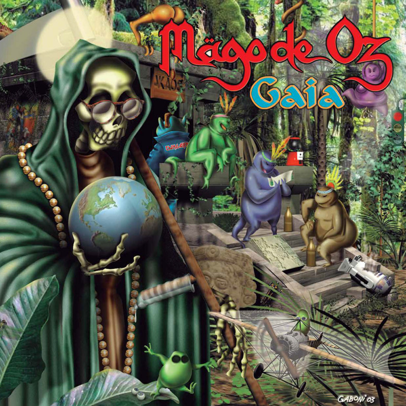

Metal... ¿mágico?🌟
Publicación: |Género: Folk Metal
El día de hoy el clima fue confuso, más no hay nada que un poco de <<Folk Metal>> no arregle, ¿verdad?
Hoy traigo La Costa Del Silencio de la banda Mägo de Oz
¿Qué es el Folk Metal?🧝
En breves palabras, el Folk Metal se basa en la fusión del heavy metal con instrumentos y/o elementos folclóricos de la región en que se origine la música. En específico, suele llevar acordeones, flautas y/o violínes para darle ese toque que lo diferencia del fuerte sonido, más igual de ruidoso, del metal.
¿Por qué 'La Costa Del Silencio'?
Debido a la extrañeza del clima de hoy, decidí "forzar" un buen estado de ánimo mediante la música, y recordé la existencia de Mägo de Oz, ya que la mezcla de elementos poco comunes en el metal, como lo son instrumentos más melódicos, y las letras protestantes me generan una sensación de optimismo; En específico, esta canción me hace sentir la mezcla perfecta entre el caos y lo soñador en el mismo movimiento.
Un fragmento que me hizo ascender...🌌
"Hagamos una revolución, que nuestro líder sea el Sol
Y nuestro ejército sean mariposas
Por bandera otro amanecer y por conquista comprender
Que hay que cambiar las espadas por rosas"
Esa mezcla de desesperanza y esperanza en la misma estrofa es lo que hace especial a esta banda.
